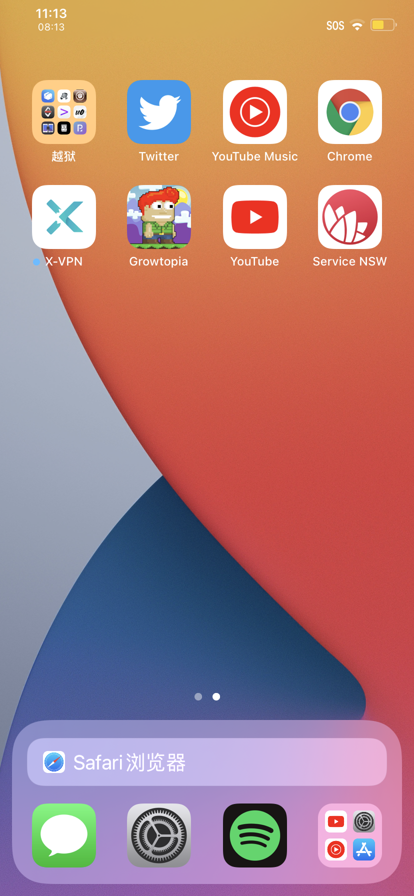
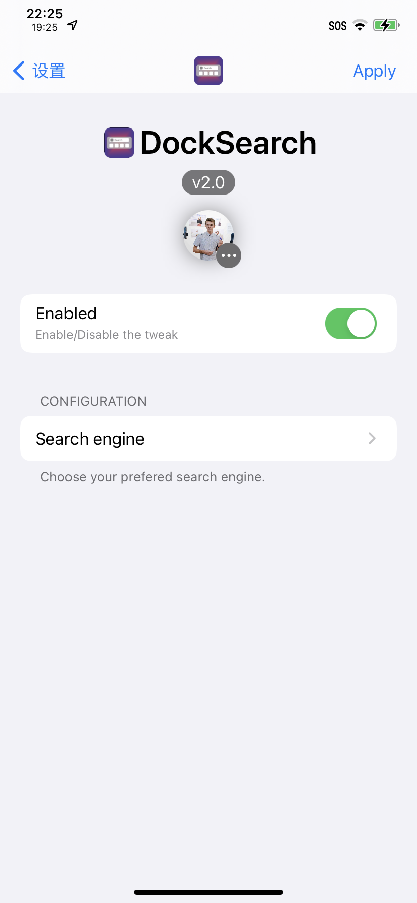

Twitter
DockSearch
Ginsu
Compatibility: This package is compatible with iOS iOS 14.0 to 15.9.

Search the web from your Home Screen.
This tweak adds a search bar to the dock on the Home Screen, which can be used to search the web, access websites and so on. DockSearch also works perfectly with the user's default browser choice, such as Chrome or Edge.
Does not support iPad or floating docks (For now).
Contact
Information
Developer
Ginsu
Version
2.1.3
Compatibility
iOS 14.0 to 15.9
Section
Tweaks
View Source Code
2.1.3
- Added support for AndroBar
2.1.2
- Fix the browser button/icon slowly turning white over time. (Weird bug) lol
2.1.1
Fix a hanging / respring loop issue caused by having floating dock tweaks installed. This update does not add support for floating dock though.
2.1
- This update was essentially a rewrite.
- Made the code a hell of a lot cleaner, simpler and more efficient.
- Added support for tweaks like Multipla.
- Added an option to show the search bar below the dock icons instead of only above.
- Now open source.
2.0.9
- Fixes a crash that would happen if the user chose YouTube as the search engine while the YouTube app was not currently installed.
- Removed some now un-needed code.
2.0.8
- Fix a bug where there would sometimes be a blury bar in the status bar.
- Makes proper use of libgscommon
- Minor code changes.
2.0.7
- Improvements to the preferences page.
- Compiled with iOS 14.4 SDK.